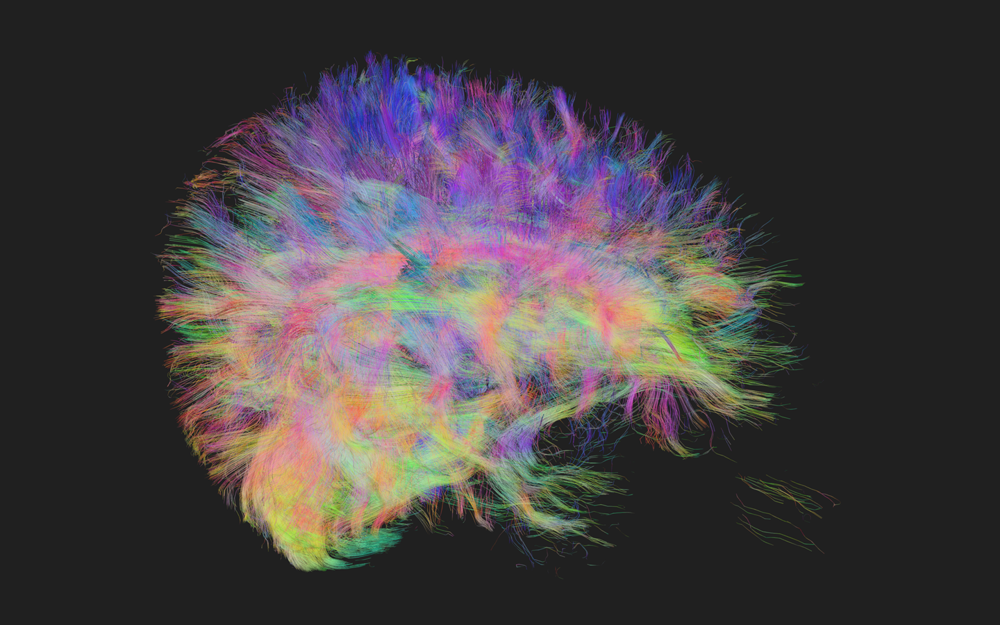
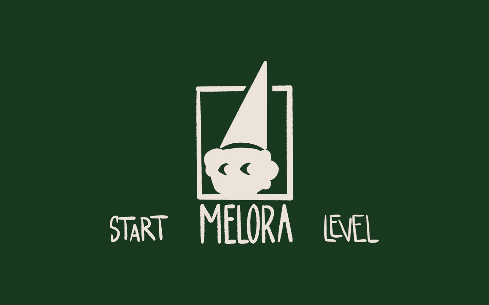
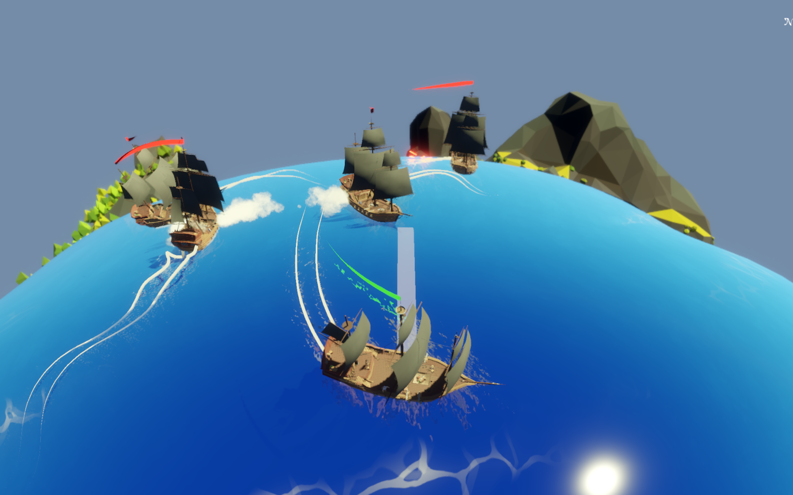

A 3D planetary platformer prototype built in Unity, featuring custom gravity physics, water buoyancy, and a variety of abilities and power ups.
Major contributions
Full-Stack Game Development: Took sole ownership of game design, level design, C# programming, sound implementation, and scene/UI integration.
Core Systems Architecture: Built interaction logic, UI, and scene management in Unity.
Custom Physics Implementation: Developed a custom planet-based spherical gravity system and tailored water buoyancy/physics for floating interactive objects.
Asset Integration: Curated and integrated audio, character models, props, and custom visual effects using Shader Graph.
Achievements
Successfully implemented a non-standard gravitational pull system and responsive camera control without native Unity support.
Built a complete, playable 3D platformer prototype featuring core gameplay loops (rolling mechanics, platforming challenges, collectible systems, and scene transitions).
Learnings & Takeaways
Learned core Unity engine workflows, component-based architecture, and object-oriented C# scripting during my first foray into game development.
Learned to quickly pick up new technical skills on the fly to bridge project gaps and ensure single-handed delivery of a working game.

Diffusion Tensor Imaging
Medical visualization tool that converts raw MRI tensor data into 3D neural fiber pathways using a custom C# FACT algorithm and HLSL shader pipeline.
Major contributions
3D Data Pipeline: Transformed raw 3D MRI dataset into 3D textures inside Unity for volumetric processing.
FACT Algorithm Implementation: Researched and implemented the Fiber Assignment by Continuous Tracking (FACT) algorithm in C# to reconstruct and visualize neural pathways from tensor data.
Shader Development & Filtering: Co-developed the rendering pipeline using HLSL, creating shaders with features like dynamic clipping planes and interactive visualization filters.
Achievements
Delivered a high-performance 3D visualization tool capable of accurately rendering complex anatomical tractography data in real time.
Learnings & Takeaways
Gained experience in writing performant HLSL code.
Learned how to bridge medical data algorithms with real-time computer graphics pipelines.

Melora
An atmospheric 2D rhythm-puzzle game where hand-drawn art, animations, and environmental puzzles are dynamically synchronized to a central musical beat in order to bring a dream world to life.
Major contributions
Audio & Animation Synchronization: Architected and implemented a custom "BeatManager" system in C# to precisely synchronize environmental soundscapes, UI cues, and 2D sprite animations to a fixed tempo.
Interdisciplinary Integration: Implemented hand-drawn 2D artwork and frame-by-frame animations from the design team into Unity's animation and rendering systems.
Core Gameplay & Logic Systems: Coded character movement, interactive puzzle mechanics, UI flow, and scene transition management.
Achievements
Blended rhythm-driven sound design with interactive 2D puzzles to create a world that satisfied the project's artistic vision.
Successfully bridged the gap between game design and fine art, translating non-technical design concepts into functional gameplay.
Learnings & Takeaways
Learned how to collaborate effectively with non-technical team members (designers/artists), translating creative vision into technical requirements.
Understood the value of early scope adjustments, pivoting a complex 2D platformer to a focused puzzle game to ensure a high-quality final product.
It is useful to separate contributions, outcomes, and lessons explicitly.

GameJam "Small World"
A fast-paced solo game jam project built in Godot, featuring planet-based ship combat powered by a custom state machine AI and satisfying sound and particle effects.
Major contributions
Solo Game Jam Development: Designed, programmed, and implemented a complete, fast-paced 3D versus action game from scratch within a tight game jam timeframe.
State Machine AI System: Designed a state machine for enemy ship AI, featuring clear behavior states (Patrol, Chase, and Attack) and obstacle detection.
VFX & Juice: Created custom particle effects for cannon smoke, projectile trails, and impacts to enhance game feel and hit feedback.
Achievements
Learned how to use Godot and GDScript on the fly during a live game jam, producing a fully functional and entertaining game loop.
Delivered a fun, polished mini-game that creatively interpreted the "Small World" theme with mini-planet navigation and naval combat.
Learnings & Takeaways
Got to know Godot’s node-based workflow, scene system, and GDScript for rapid prototyping and quick feature iteration.
Gained first hands-on experience structuring state-based AI behaviors for reactive NPC combat.
Learned to prioritize essential mechanics, visual flair, and core fun over non-essential features under strict time limits.